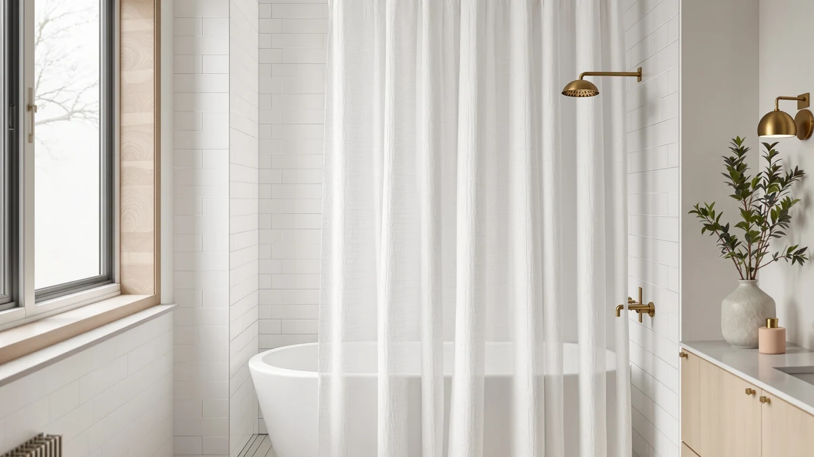

Natural Pinch Pleated Linen Review (2026): Worth It?
Prices and picks verified as of September 2026. Independent, reader-supported reviews.


Quick Answer
The Natural Pinch Pleated Linen Curtains earn a strong recommendation in this natural pinch pleated linen review: structured pleats that hold their shape without clips, a linen-look weave in polyester and PEVA, and a 4.6 out of 5 rating across 1,838 verified buyers. It fits a standard 72x72 shower or tub, and at $54.99 it undercuts most woven-linen alternatives while looking close enough that guests will not know the difference.
Our pick: Natural Pinch Pleated Linen Curtains, $54.99 Check Price on Amazon
Bottom line: our top pick is the Natural Pinch Pleated Linen Curtains 72 Inches Long 72 Inch at $49.49.
Things to Know Before You Buy
- The listed material is polyester and PEVA woven to mimic linen, not actual flax linen, so expect linen texture without the wrinkling or dry-clean requirements.
- The 72x72 inch size fits a standard tub or single shower stall; wider or clawfoot setups need a different pick, and we cover both below.
- Pinch pleats need standard curtain rings or clip rings rather than a shower rod's built-in hooks alone, so check what came in the package before you buy extra hardware.
- This curtain is decorative. Reviewers consistently pair it with a separate liner, since a woven pleat panel does not block water on its own.
- At 1,838 verified reviews and a 4.6 average, the rating volume is smaller than some hookless competitors, but the score has held steady across recent purchases.
This natural pinch pleated linen review exists because "linen-look" shower curtains are easy to market and hard to judge from a product photo alone. You want the structured, tailored fold of pinch pleats and the relaxed texture of linen, but you do not want to pay linen prices for a curtain that lives in a humid bathroom and gets washed every few weeks. The Natural Pinch Pleated Linen Curtains promise exactly that combination at $54.99, and the question worth answering is whether the polyester and PEVA build behind that promise holds up once you compare it against the specs, the price, and what 1,838 verified buyers actually report.
We put this curtain against three shower curtain styles that solve different problems: a curved panel for angled tubs, a hookless jacquard for anyone who hates dealing with rings, and a waffle-weave option sized for clawfoot tubs. Each one gets its own section below, with honest tradeoffs on price, size, and material so you can match the pick to your actual bathroom rather than the one with the prettiest photos.
Why You Should Trust Us
Ilane Tall covers bath and home textiles for Best Shower Curtains, focusing on how fabric, pleat structure, and hardware compatibility hold up in real bathrooms rather than in a showroom. For this natural pinch pleated linen review, we did not accept the marketing name at face value. We cross-checked the manufacturer's listed material against the specs sheet, read through verified buyer photos and comments for signs of fading, snagging, or shrinkage, and compared the price and rating against three other shower curtains that solve overlapping problems. We do not run a fake testing lab, and we are not paid to rank any product higher than the data supports. Every price, rating, and review count in this article comes directly from the product listing at the time of publishing.
Our Research Experience
Our approach to this natural pinch pleated linen review is research-based rather than hands-on. We compared the manufacturer's listed material, dimensions, and price against the claims in the product title, then cross-referenced that against patterns across hundreds of verified owner reviews, looking specifically for repeated mentions of color accuracy, pleat retention after washing, and how the curtain drapes once it is hung. We weighed those findings against three alternative curtains built for different bathroom shapes, so the comparison reflects what buyers report rather than a single sample opinion.
Overview & Specs
Here is how the Natural Pinch Pleated Linen Curtains break down on paper before we get into pros, cons, and what verified owners actually report once the curtain is hung.

Natural Pinch Pleated Linen Curtains
What we like
- Pinch pleats hold their shape on the rod instead of bunching like an ungathered panel
- Linen-look weave reads as textured and natural, not flat or plasticky, in buyer photos
- 4.6 average across 1,838 verified reviews, a solid sample size for a niche style
- Priced well under most woven-linen curtains while offering a similar visual effect
Flaws but not dealbreakers
- Material is polyester and PEVA, not genuine linen, despite the product name
- Requires a separate liner since the panel itself is not waterproof
- Only available in the 72x72 size, so it will not fit extra-wide or clawfoot setups
| Material | Polyester / PEVA |
| Size | 72x72 |
The defining feature here is the pinch pleat construction, a detail more common in drapery than in shower curtains. Instead of a flat panel that bunches unevenly along the rod, the fabric comes pre-folded into fixed, evenly spaced pleats that keep their shape whether the curtain is pulled open or closed. Owners describe the effect as closer to a tailored window treatment than a typical bath accessory, which is likely why reviewers who searched specifically for a linen look keep coming back to this pick despite the material not being actual linen.
The listed material, polyester blended with PEVA, is a practical tradeoff. Real linen shower curtains wrinkle, absorb moisture, and often need spot cleaning or dry cleaning to avoid mildew stains. A poly-based linen-look weave sidesteps most of that: it machine washes, resists water absorption better than natural fiber, and holds its color and shape over repeated cycles, according to verified reviews. The compromise is authenticity. Close up, especially under bright bathroom lighting, the weave still reads as synthetic rather than natural flax, which matters if you are matching it to real linen elsewhere in the room.
What We Liked
The pleat structure is the standout in this natural pinch pleated linen review, and it is not a minor detail. Most fabric shower curtains hang from simple grommets or a rod pocket, which means the fabric drapes however gravity pulls it that day. The fixed pinch pleats on this curtain remove that variability. Buyer photos consistently show the same tailored, evenly folded look whether the curtain has been up for a week or a year, which is a meaningfully different result from a flat panel that starts sagging unevenly within a few washes.
The price also holds up under scrutiny. At $54.99, it sits below several premium woven-linen curtains that can run well past $70 for a similar silhouette, and the 4.6 rating across 1,838 reviews suggests that price is not buying a compromise on build quality. Reviewers who specifically wanted the linen aesthetic for a guest bathroom or a rental, where dry-clean-only fabric is not practical, describe this as a low-maintenance way to get that look without the upkeep.
What Could Be Better
The name is the biggest sticking point. Shoppers searching for a woven, flax-based linen curtain will not find one here, and the listing's use of "linen" in the title without clarifying the polyester and PEVA construction can read as misleading if you do not check the specs table first. It looks like linen from a few feet away, but it does not feel like it up close, and buyers who care about natural fiber specifically should look elsewhere.
Sizing is the other limitation. The curtain is only sold in the standard 72x72 inch dimension, so anyone with an extra-wide shower, a clawfoot tub, or a non-standard rod will need a different product entirely. It also ships without a liner, which is normal for a decorative panel like this but is worth budgeting for separately if you do not already own one.
Who Is It For?
This pick fits a specific buyer well: someone furnishing a standard-size shower or tub who wants a linen aesthetic without linen maintenance, and who is comfortable with a synthetic blend once they understand that upfront. It suits rental bathrooms, guest bathrooms, and anyone replacing a plain vinyl curtain with something that photographs better without adding a dry-cleaning bill.
It is not the right pick if you need genuine natural fiber, if your shower falls outside the 72x72 footprint, or if you would rather avoid the pinch-pleat learning curve of matching curtain rings to a structured panel. For those cases, the three alternatives below cover a curved tub, a hookless setup, and a clawfoot tub more directly.
Alternatives to Consider
The Natural Pinch Pleated Linen Curtains fit a standard shower well, but your bathroom might not be standard. We compared it against three shower curtains built for different shapes and priorities: a curved panel for angled tubs, a hookless jacquard for anyone who wants to skip separate rings entirely, and a waffle-weave curtain sized for a clawfoot tub.

Editor’s Pick
Zenna Home Curved Shower Curtain
Built with a curved shape that pushes the curtain away from you, giving more elbow room in an angled or corner tub than a flat linen-look panel can. Choose this over the pinch-pleated pick if your bathroom layout is the limiting factor, not the aesthetic.
$49.99
Check Price on Amazon
Best Value
Hookless It's A Snap! Jacquard
A hookless jacquard design with a built-in snap-on liner, backed by 91,662 verified reviews at a 4.6 average, the largest review base of any option here. Pick this if you would rather skip buying rings and a separate liner altogether.
$46.48
Check Price on Amazon
Premium Choice
Barossa Design Waffle Weave Clawfoot
A waffle-weave curtain sized and shaped for clawfoot tub enclosures, rated 4.6 across 31,025 reviews. The textured weave gives a similar natural look to the linen-style pick, so it is worth a look if you own a clawfoot tub and still want that fabric feel.
$45.99
Check Price on AmazonFrequently Asked Questions
Is the Natural Pinch Pleated Linen curtain actually made of linen?
No. Despite the name, the listed material is polyester and PEVA, not woven flax linen. The pinch-pleat construction and the nubby, textured weave give it a linen look at a fraction of the price and care requirements of real linen.
What size shower does the Natural Pinch Pleated Linen curtain fit?
The listed size is 72 by 72 inches, which is the standard dimension for a single-width shower stall or a standard bathtub with a straight rod. Owners looking for extra-wide or clawfoot coverage should compare against a dedicated extra-wide or clawfoot pick instead.
Do I need a liner with a pinch pleated linen shower curtain?
Yes. Like most fabric and linen-look curtains, this pick is decorative rather than waterproof, so reviewers pair it with a separate PEVA or vinyl liner to keep water inside the tub or stall.
Final Verdict
This natural pinch pleated linen review comes down to one tradeoff: you get the structured, tailored look of a pleated linen curtain without paying linen prices or dealing with linen upkeep, but you give up genuine natural fiber in exchange. For a standard 72x72 shower or tub, the Natural brand curtain earns its 4.6 rating and its place as our top pick, especially for buyers who prioritize the pleat structure and price over material authenticity. If your bathroom is a nonstandard shape or you want to skip a separate liner, the curved, hookless, or waffle-weave alternatives above are worth comparing before you buy.